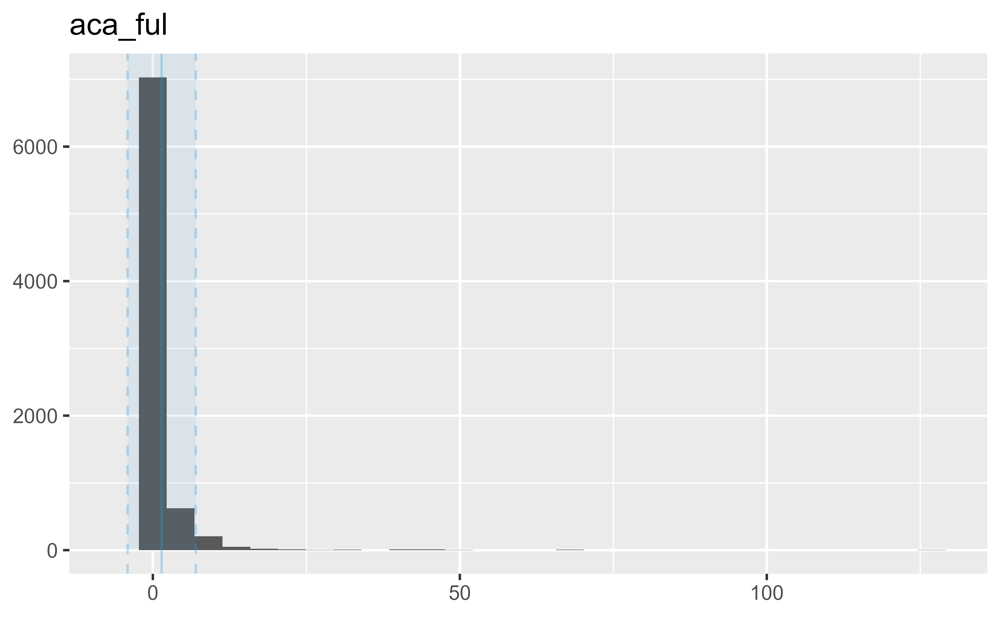
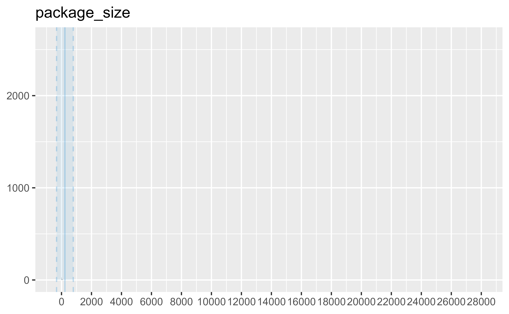
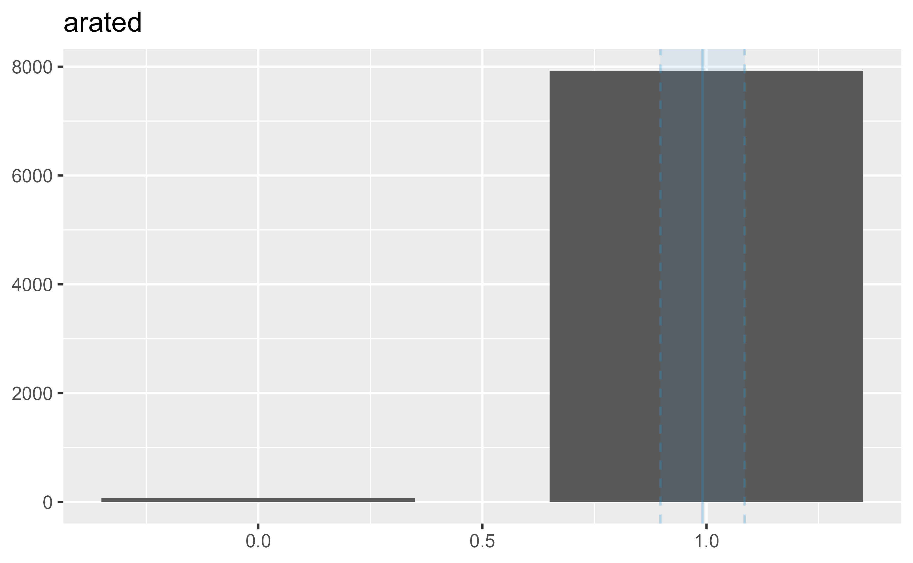

[ROWS] 1945283
[PAGES] 244
[FIELDS] 14
[MODIFIED] 2025-04-28
[DOWNLOAD] https://download.medicaid.gov/data/aca-federal-upper-limits-04282025.csv
[DICTIONARY] https://data.medicaid.gov/api/1/metastore/schemas/data-dictionary/items/407b1e31-27a5-42c5-947a-374aa67dbf02
22 ACA Federal Upper Limits
Affordable Care Act Federal Upper Limits (FUL) based on the weighted average of the most recently reported monthly average manufacturer price (AMP) for pharmaceutically and therapeutically equivalent multiple source drug products that are available for purchase by retail community pharmacies on a nationwide basis.
Metadata
Dictionary
state
State.
year
Year of TAF data.
benefit_package
Type of Medicaid and CHIP benefit package
(full-scope, comprehensive, limited, or unknown).
count_ever_enrolled
Number of Medicaid and CHIP beneficiaries ever
enrolled in each benefit package over the year
(duplicated count).
count_last_month_enrollment
Number of Medicaid and CHIP beneficiaries enrolled
in each benefit package as of an individual's last
month of enrollment (unduplicated count).
average_enrollment_per_month
Average monthly enrollment in each benefit package
over the year.
dq_unusable
Flag for states with unusable TAF data quality or
high concern data quality on one or more adapted
measures based on DQ Atlas thresholds.
Data
tibble [8,000 × 14] (S3: tbl_df/tbl/data.frame)
$ product_group : chr [1:8000] "1165" "4486" "2662" "1912" ...
$ ingredient : chr [1:8000] "NYSTATIN" "OLMESARTAN MEDOXOMIL" "RIVASTIGMINE TARTRATE" "QUINAPRIL HYDROCHLORIDE" ...
$ strength : chr [1:8000] "500000U" "20MG" "3MG" "5MG" ...
$ dosage : chr [1:8000] "TABLET" "TABLET" "CAPSULE" "TABLET" ...
$ route : chr [1:8000] "ORAL" "ORAL" "ORAL" "ORAL" ...
$ mdr_unit_type : Factor w/ 6 levels "CAP","GM","ML",..: 5 5 1 5 5 5 1 1 1 5 ...
$ aca_ful : num [1:8000] 0.4416 0.6728 0.3296 0.1307 0.0935 ...
$ package_size : int [1:8000] 100 30 500 90 90 100 90 90 100 100 ...
$ ndc : chr [1:8000] "23155-0051-01" "68462-0437-30" "33342-0090-15" "68180-0556-09" ...
$ arated : chr [1:8000] "Yes" "Yes" "Yes" "Yes" ...
$ year : int [1:8000] 2019 2019 2019 2019 2019 2019 2019 2019 2019 2019 ...
$ month : int [1:8000] 2 2 2 2 2 2 2 2 2 2 ...
$ amp_wt_avg : num [1:8000] 0.159 0.3845 0.0385 0.047 0.0535 ...
$ gt_175pc_amp_wt_avg: int [1:8000] 1 0 1 1 0 0 0 0 1 1 ...
Overview
resp |> data_codebook()resp (8000 rows and 14 variables, 14 shown)
ID | Name | Type | Missings
---+---------------------+-------------+---------
1 | product_group | character | 0 (0.0%)
| | |
| | |
| | |
| | |
| | |
| | |
| | |
| | |
| | |
| | |
---+---------------------+-------------+---------
2 | ingredient | character | 0 (0.0%)
| | |
| | |
| | |
| | |
| | |
| | |
| | |
| | |
| | |
| | |
---+---------------------+-------------+---------
3 | strength | character | 0 (0.0%)
| | |
| | |
| | |
| | |
| | |
| | |
| | |
| | |
| | |
| | |
---+---------------------+-------------+---------
4 | dosage | character | 0 (0.0%)
| | |
| | |
| | |
| | |
| | |
| | |
| | |
| | |
| | |
| | |
---+---------------------+-------------+---------
5 | route | character | 0 (0.0%)
| | |
| | |
| | |
| | |
| | |
| | |
| | |
| | |
| | |
| | |
---+---------------------+-------------+---------
6 | mdr_unit_type | categorical | 0 (0.0%)
| | |
| | |
| | |
| | |
| | |
---+---------------------+-------------+---------
7 | aca_ful | numeric | 0 (0.0%)
---+---------------------+-------------+---------
8 | package_size | integer | 0 (0.0%)
---+---------------------+-------------+---------
9 | ndc | character | 0 (0.0%)
| | |
| | |
| | |
| | |
| | |
| | |
| | |
| | |
| | |
| | |
---+---------------------+-------------+---------
10 | arated | character | 0 (0.0%)
| | |
---+---------------------+-------------+---------
11 | year | integer | 0 (0.0%)
---+---------------------+-------------+---------
12 | month | integer | 0 (0.0%)
| | |
---+---------------------+-------------+---------
13 | amp_wt_avg | numeric | 0 (0.0%)
---+---------------------+-------------+---------
14 | gt_175pc_amp_wt_avg | integer | 0 (0.0%)
| | |
-------------------------------------------------
ID | Values | N
---+----------------------------------------+--------------
1 | 10036 | 2 ( 0.0%)
| 10126 | 4 ( 0.0%)
| 1019 | 4 ( 0.0%)
| 102 | 5 ( 0.1%)
| 1022 | 7 ( 0.1%)
| 1026 | 3 ( 0.0%)
| 1028 | 10 ( 0.1%)
| 1029 | 11 ( 0.1%)
| 1032 | 6 ( 0.1%)
| 1042 | 4 ( 0.0%)
| (...) |
---+----------------------------------------+--------------
2 | ABACAVIR SULFATE | 9 ( 0.1%)
| ABACAVIR SULFATE/LAMIVUDINE | 3 ( 0.0%)
| ACAMPROSATE CALCIUM | 3 ( 0.0%)
| ACARBOSE | 15 ( 0.2%)
| ACETAMINOPHEN; BUTALBITAL | 2 ( 0.0%)
| ACETAMINOPHEN; CODEINE PHOSPHATE | 15 ( 0.2%)
| ACETAMINOPHEN; OXYCODONE HYDROCHLORIDE | 27 ( 0.3%)
| ACETAMINOPHEN; TRAMADOL HYDROCHLORIDE | 11 ( 0.1%)
| ACETAZOLAMIDE | 10 ( 0.1%)
| ACITRETIN | 7 ( 0.1%)
| (...) |
---+----------------------------------------+--------------
3 | .025MG/24H | 5 ( 0.1%)
| .0375MG/24 | 3 ( 0.0%)
| .075MG/24H | 1 ( 0.0%)
| 0.005% | 3 ( 0.0%)
| 0.005MG | 3 ( 0.0%)
| 0.01 % | 6 ( 0.1%)
| 0.01% | 1 ( 0.0%)
| 0.02-3(24) | 11 ( 0.1%)
| 0.025MG | 3 ( 0.0%)
| 0.025MG;2.5MG | 7 ( 0.1%)
| (...) |
---+----------------------------------------+--------------
4 | ADH. PATCH | 2 ( 0.0%)
| CAP ER 24H | 55 ( 0.7%)
| CAP SA 24H | 8 ( 0.1%)
| CAP SPR 24 | 15 ( 0.2%)
| CAPSULE | 892 ( 11.2%)
| CAPSULE DR | 67 ( 0.8%)
| CAPSULE ER | 24 ( 0.3%)
| CAPSULE, DELAYED REL PELLETS | 76 ( 0.9%)
| CAPSULE, EXTENDED RELEASE | 119 ( 1.5%)
| CONCENTRATE | 9 ( 0.1%)
| (...) |
---+----------------------------------------+--------------
5 | DENTAL | 1 ( 0.0%)
| NASAL | 5 ( 0.1%)
| OPHTHALMIC | 38 ( 0.5%)
| ORAL | 7728 ( 96.6%)
| ORAL-28 | 41 ( 0.5%)
| ORAL, RECTAL | 4 ( 0.0%)
| OTIC | 3 ( 0.0%)
| RECTAL | 7 ( 0.1%)
| SUB-Q | 4 ( 0.0%)
| SUBLINGUAL | 19 ( 0.2%)
| (...) |
---+----------------------------------------+--------------
6 | CAP | 1300 ( 16.2%)
| GM | 84 ( 1.0%)
| ML | 174 ( 2.2%)
| SUP | 5 ( 0.1%)
| TAB | 6374 ( 79.7%)
| TDP | 63 ( 0.8%)
---+----------------------------------------+--------------
7 | [0, 127.26] | 8000
---+----------------------------------------+--------------
8 | [1, 28000] | 8000
---+----------------------------------------+--------------
9 | 00002-3231-30 | 1 ( 0.0%)
| 00002-3232-30 | 1 ( 0.0%)
| 00002-3234-30 | 1 ( 0.0%)
| 00002-3251-30 | 1 ( 0.0%)
| 00002-3270-04 | 1 ( 0.0%)
| 00002-4184-02 | 1 ( 0.0%)
| 00002-4184-07 | 1 ( 0.0%)
| 00002-4184-30 | 1 ( 0.0%)
| 00002-4456-01 | 1 ( 0.0%)
| 00002-4456-85 | 1 ( 0.0%)
| (...) |
---+----------------------------------------+--------------
10 | No | 71 ( 0.9%)
| Yes | 7929 ( 99.1%)
---+----------------------------------------+--------------
11 | 2019 | 8000 (100.0%)
---+----------------------------------------+--------------
12 | 2 | 7997 (100.0%)
| 11 | 3 ( 0.0%)
---+----------------------------------------+--------------
13 | [0, 72.72] | 8000
---+----------------------------------------+--------------
14 | 0 | 4983 ( 62.3%)
| 1 | 3017 ( 37.7%)
-----------------------------------------------------------
Distribution
Variable | Mean | SD | IQR | Range | Skewness
------------------------------------------------------------------------------
aca_ful | 1.43 | 5.56 | 0.74 | [3.28e-03, 127.26] | 13.10
package_size | 227.45 | 557.17 | 70.00 | [1.00, 28000.00] | 21.21
year | 2019.00 | 0.00 | 0.00 | [2019.00, 2019.00] |
month | 2.00 | 0.17 | 0.00 | [2.00, 11.00] | 51.62
amp_wt_avg | 0.75 | 3.08 | 0.37 | [1.87e-03, 72.72] | 13.91
gt_175pc_amp_wt_avg | 0.38 | 0.48 | 1.00 | [0.00, 1.00] | 0.51
Variable | Kurtosis | n | n_Missing
-------------------------------------------------
aca_ful | 236.32 | 8000 | 0
package_size | 849.35 | 8000 | 0
year | | 8000 | 0
month | 2663.33 | 8000 | 0
amp_wt_avg | 264.56 | 8000 | 0
gt_175pc_amp_wt_avg | -1.74 | 8000 | 0


